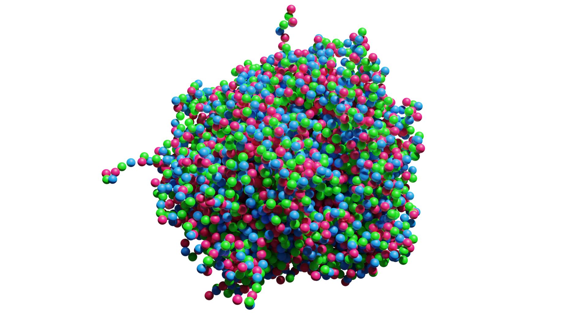

Biological condensates are created by the liquid-liquid phase separation in the cells. Traditionally, the notion of phase separation was applied only to non-living systems. However, this perspective changed dramatically with the discovery of P granules in the C. elegans germline, highlighting the critical role of liquid-liquid phase separation in living cells. Liquid-liquid phase separation is a process where a homogeneous solution divides into two separate liquid phases, similar to how oil separates from water. In biological systems, this phenomenon leads to the formation of membrane-less organelles, which are dynamic cellular compartments without lipid bilayers, commonly known as biological condensates.
Research has shown that protein condensates, which start off dynamic and fluid, gradually transition into a more solid-like state with slower dynamics over a period of several days. This slow relaxation process is akin to the behavior of glass, which is inherently a non-equilibrium process. Comprehending this material characteristic is vital, as it represents the time-dependent evolution of the rheological properties of protein condensates.
How could nonequilibrium processes such as material aging and active processes from molecular motors play a role in the rheological properties of biological condensates? My current projects are focused on the interaction between nonequilibrium processes and rheological properties of biological condensates.